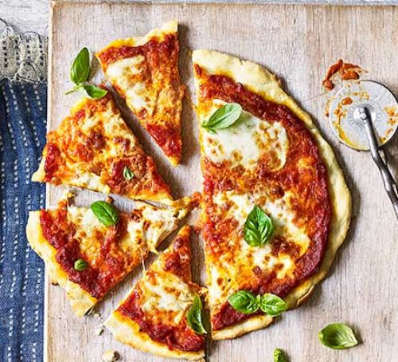

Our Work
Cheese
Main article: Pizza cheese A pizza quattro formaggi (Italian: [ˈkwattro forˈmaddʒi], "four cheeses") in London Mozzarella is commonly used on pizza, with the highest quality buffalo mozzarella produced in the surroundings of Naples.[36] Eventually, other cheeses were used well as pizza ingredients, particularly Italian cheeses including provolone, pecorino romano, ricotta, and scamorza. Less expensive processed cheeses or cheese ss, consistent fat and moisture content, and stable shelf life. This quest to create the ideal and economical pizza cheese has involved many studies and experiments analyzing the impact of vegetable Europe.the ideal and economical pizza cheese
Crust

A pizza just removed from an oven, with a close-up view of the cornicione (the outer edge) The bottom of the pizza, called the "crust", may vary widely according to style, thin as in a typical hand-tossed Neapolitan pizza or thick as in a deep-dish Chicago-style. It is traditionally plain, but may also be seasoned with garlic or herbs, or stuffed with cheese. The outer edge of the pizza is sometimes referred to as the cornicione.Pizza dough often contains sugar, both to help its yeast rise and enhance browning of the crust. Dipping sauce specifically for pizza was invented by American pizza chain Papa John's Pizza in 1984 and has since become popular when eating pizza, especially the crust.[35]
Toppings

Foods similar to pizza have been made since the Neolithic Age.[16] Records of people adding other ingredients to bread to make it more flavorful can be found throughout ancient history. In the 6th century BC, the Persian soldiers of Achaemenid Empire during the rule King Darius I baked flatbreads with cheese and dates on top of their battle shields[17][18] and the ancient Greeks supplemented their bread with oils, herbs, and cheese.[19][20] An early reference to a pizza-like food occurs in the Aeneid, when Celaeno, queen of the Harpies, foretells that the Trojans would not find peace until they are forced by hunger to eat their tables (Book III). In Book VII, Aeneas and his men are served a meal that includes round cakes (like pita bread)